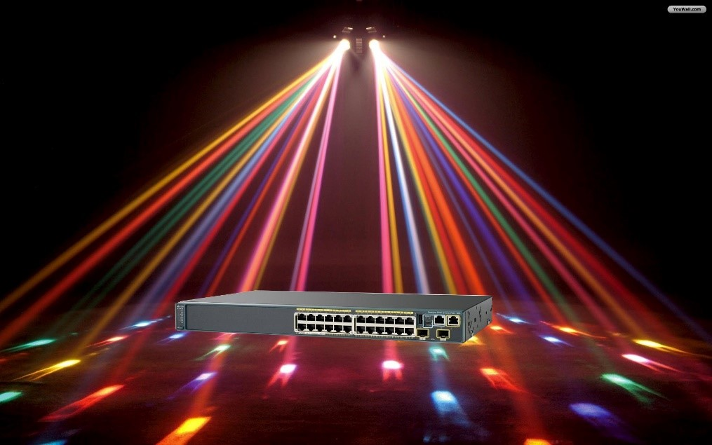

Dag 1
Dag 1 zit er op. Ik ben vandaag aan mijn project begonnen. Ik heb een hoop IP ranges in een programma moeten zetten. Dit programma scant die range en slaagt componenten op. Als er een component wegvalt of traag is kan je dit zien op deze tool. Ik ga hier ook een map voor moeten maken waar je dan duidelijk kan zien waar het probleem zich bevindt.Mijn collega’s kende ik al een beetje omdat ik op dezelfde vestiging vakantiewerk gedaan heb. Nu sta ik wel bij een andere ploeg. Deze ploeg verzorgt de infrastructuur van het netwerk.
Als er iets mis is met een switch of een server dan lossen deze kerels het op. Morgen moeten we bijvoorbeeld naar Brugge voor een nieuw VPN en het vervangen van 2 verouderde switchen.
Dag 2
Ik moest om half 10 in Mol zijn. We hadden afgesproken bij Ben thuis zodat we dan samen naar Brugge konden rijden. Ik was zeker op tijd vertrokken dus arriveerde ik een beetje te vroeg.In Brugge kreeg ik de kans om te helpen bij het vervangen van 3 verouderde switchen. Dit moest na de werkuren gebeuren dus was het een lange dag maar dat vond ik niet erg.
Het was leuk om met Ben de switchen in te stellen. Spijtig zien we zo’n dingen niet in de les systeembeheer. Blijkbaar heeft Cisco een eigen OS. Deze werkt volledig via de commandline. Je hebt hier een speciale kabel voor nodig en een computerprogramma. Ben gebruikt het programma PutTY. Serverbeheer vind ik maar niets maar dit is nog wel interessant. Het is leuk om na te denken over hoe de switchen met elkaar moeten praten. Het is best fascinerend dat ze zo’n groot netwerk hebben ! Zij hebben sites in Duitsland, België en Nederland en alles is met elkaar verbonden. Ze hebben zelfs een telefoonlijn over het netwerk. Dit werkt allemaal met verschillende VLAN’s.
Dag 3
Dag 3 zat ik weer in Beerse. Ik heb verder gewerkt aan mijn project. Ik heb moeten zoeken naar hoe ik de locatie property van een switch via die tool kan aanpassen. Toen ik dat vond heb ik daar een handleiding voor geschreven. Ik leer hier erg veel over netwerken en switchen en het is allemaal best interessant.Dag 4
Dag 4 heb ik mezelf bezig gehouden met mijn project. Ik heb een template geschreven voor het aanpassen van een snmp-location van een switch. Daarna heb ik een handleiding geschreven over hoe je zo’n template kan maken en uitvoeren. Mijn project vordert goed.Dag 5
Dag 5 zit er op. Ik heb verder gewerkt aan mijn project. Ik heb een interface gemaakt waar je duidelijk de groepen kan zien van België, Nederland en Duitsland. Als er een node uitvalt komt deze groep ook bovenaan te staan. Ook heb ik de kans gekregen om een 3G router te configureren. Ik moest verbinding maken tussen de router en mijn laptop en toen kon ik naar de router zijn IP surfen om instellingen te wijzigen. De PIN code van de simkaart ingeven was al genoeg. Toen kreeg ik de kans om er een firewall aan te hangen. Toen moest ik checken of ik een nieuw IP van de juiste range kreeg maar dit lukte niet dus namen mijn stagementor en een consultant over.In de namiddag heb ik wat opgezocht over hoe je pollers kan toevoegen omdat ze me vroegen of ik meer informatie kan weergeven bij UPS’en, Firewalls en temperatuurmeters. Hier werk ik maandag aan voort.
Dag 6
Ik heb gewerkt aan alerts en heb wat opgezocht over pollers. Ik heb ook al wat aan een map gewerkt. Dit werkt best efficiënt. De map gaat in de node kijken waar die locatie is dus nu moet ik woensdag gewoon kijken of alles juist staat. Als ze niet juist staan moet ik in de switch de locatie wijzigen. Dat gaat makkelijk omdat ik daar een paar dagen terug een template voor heb geschreven.Voor de alerts heb ik zelf wat alerts gemaakt. Gebaseerd op de standaard alerts, maar bij die standaard alerts kun je de thresholds niet aanpassen dus heb ik er zelf gemaakt. Dit gaat redelijk makkelijk omdat solarwinds werkt met variabelen en dan is het makkelijk om alert berichten op te stellen.
Ik heb ook twee handleidingen geschreven. Één over de alerts en één over views. Deze schrijf ik zodat ze na mijn stage dingen kunnen aanpassen zonder dat ze op forums moeten gaan zoeken.
Morgen is het vroeg dag, Jim komt me om kwart voor zeven oppikken. We rijden naar Hoeselt en in de namiddag rijden Ger en ik door naar Ettal. Dit gaat dus een lange dag worden.
Dag 7
Dag 7 was niet zo een lange dag dan ik had gedacht. Het was vroeg opstaan, dat wel. We waren om 8u15 aangekomen in Hoeselt. We hebben daar een switch, firewall en 2 printers geïnstalleerd. Dit duurde helemaal niet lang. Rond 9u15 vertrokken we naar Etalle en rond half 12 waren we daar gearriveerd. We wachten tot ‘s middags om de switch te vervangen en de firewall te installeren. Dit duurde niet zo lang, we waren om half 2 daar al weer vertrokken. We reden recht naar huis dus ik was thuis rond 4u.Dag 8
Dag 8 heb ik weer verder gewerkt aan mijn project. Het vordert goed en ik kom dichter bij de finish. Nu ben ik nog kleine dingen aan het tweaken en hier en daar nog iets toevoegen. Ik heb nog 2 dagen na deze om het project af te krijgen en ik denk dat het mij gaat lukken. Vandaag heb ik verder gewerkt aan de map, waar ik morgen ook nog verder aan werk en een handleiding voor ga schrijven.Dag 9
Ik heb verder gewerkt aan mijn project. Het is zo goed als klaar. Ik heb wat verder getweaked en nog kleine dingen toegevoegd. Morgen ga ik nog eens vragen voor wat er nog zeker op moet staan. Ook moet ik het alert e-mailadres veranderen want deze staat nu op mijn e-mail.Dag 10
Ik heb mijn project afgewerkt. Ze waren er erg blij mee. Ik heb nog enkele UnDP Pollers toegevoegd en ook daar heb ik een handleiding van geschreven. Toen hebben we afscheid genomen . In de zomer ga ik er waarschijnlijk vakantiewerk doen, wel op een andere afdeling.Photocollage
L’entrée est bien agréable.
Il y a une machine à café.
Il y a de la soupe à volonté.
Les collègues sont super sympathiques.
Cisco dans la disco.

Une balade en voiture longue mais amusante.